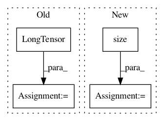

d8a075668b6e9cdf4c08f6c7285e5c7d2fbf5332,torch_geometric/graph/geometry.py,,edges_from_faces,#Any#,38
Before Change
return ValueError()
// Append undirected edges.
edges = torch.cat((edges, edges.index_select(1, torch.LongTensor([1, 0]))))
// Sort the adjacencies row-wise.
edges = edges.t()
sorted, indices = torch.sort(edges[0], 0)
edges = torch.cat((sorted, edges[1][indices])).view(2, -1)
return edges
After Change
// Build directed adjacency matrix.
adj = torch.sparse.FloatTensor(edges.t(),
torch.ones(edges.size(0)),
torch.Size([n, n]))
// Convert to undirected adjacency matrix.
adj = adj + adj.t()
// Remove duplicate indices.
// NOTE: This doesn"t work if transpose(...) is removed.
adj = adj.transpose(0, 1).coalesce()
return adj._indices()
In pattern: SUPERPATTERN
Frequency: 3
Non-data size: 4
Instances
Project Name: rusty1s/pytorch_geometric
Commit Name: d8a075668b6e9cdf4c08f6c7285e5c7d2fbf5332
Time: 2017-10-17
Author: matthias.fey@tu-dortmund.de
File Name: torch_geometric/graph/geometry.py
Class Name:
Method Name: edges_from_faces
Project Name: facebookresearch/pytext
Commit Name: a8a098209b69ccaa22bc5d99332e306e21cad5d8
Time: 2019-01-29
Author: zsc@fb.com
File Name: pytext/models/semantic_parsers/rnng/rnng_parser.py
Class Name: RNNGParser
Method Name: get_loss
Project Name: rusty1s/pytorch_geometric
Commit Name: 37847c77889e39143034af9fe0d4b92bc74e992a
Time: 2018-03-02
Author: matthias.fey@tu-dortmund.de
File Name: torch_geometric/datasets/utils/ply.py
Class Name:
Method Name: read_ply